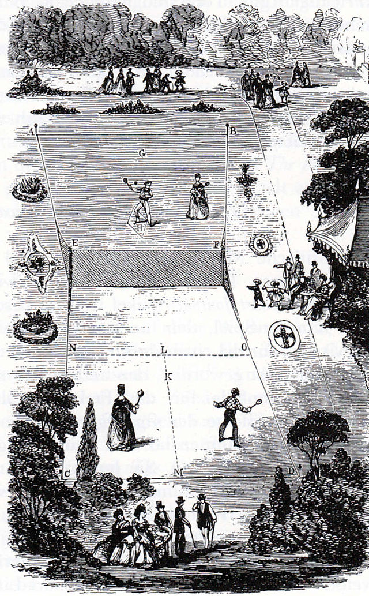

The History of Tennis
Tennis’ origins have been widely disputed, However, Major Walter Clopton Wingfield published the first rule book in 1873 and got a patent on his game the next year. Originally, the courts were hourglass-shaped which is clearly different from the rectangular courts that we all know. This game was also called lawn tennis, which is played outdoors and on a lawn as the name suggests.
During this time, the governing body of real tennis, which is not the same as it is played indoors with walls and a completely different style of play, the Marylebone Cricket Club (MCC) had a known player, J.M. Heathcote, developed a new and better tennis ball. After this, the MCC established a new set of rules for tennis in 1875.
As the sport spread around the world, notably the United States, a major milestone was about to be made back at home in England. It all started when All England Croquet Club set aside one of their lawns at Wimbledon for tennis. The club became so popular that they changed their name to All England Croquet and Lawn Tennis Club. The club decided to hold a tennis championship in 1877, where they made a few changes to the rule of the sport that still hold true to this day, most notably having rectangular courts, allowing the server to have another chance at the serve if they failed the first time (a fault), and having the same scoring as real tennis, 15, 30, 40. It wouldn’t be until 1880 and many alterations to the rules, for the All England Club and MCC to come together and publish official rules of tennis, that mostly still are the rules that we still follow.